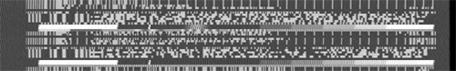
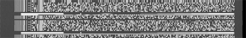

| Packages |
|
Video::Capture::V4l..................................CPAN Video::Frequencies...................................CPAN Video::XawTV.........................................CPAN Image::Magick..........................................CPAN PDL (Perl Data Language)....CPAN, pdl.perl.org Event.......................................................CPAN |
Perl is not currently a common choice for real time applications. The dynamic nature of the language makes it difficult to predict run-time behavior (and speed) reliably. However, video capturing applications (for instance, digitizing a television signal and saving it to disk) have to be real time. If you miss a frame, it's gone forever, so your program has a deadline.
One of my principles for programming is to use the right language for the job. In recent years this has mutated into "let's combine the strengths of various languages to solve a problem" or, more precisely, "write a Perl interface to the problem."
The Video::Capture::V4l module was created to solve such a problem: I wanted to record a television show that was broadcast daily at different times, on a TV channel that didn't properly support the VPS (video programming service) signal to switch on my VCR. What I will describe here will not work in the U.S. — but being able to capture 50 704x528 fields per second with a 333 MHz dual Pentium II is worth attention anyway.
To do this, I had to get at the video data and compare it with some pre-recorded sequence, trying to match the beginning of the show (which fortunately was always the same). Then I used Kermit to transfer commands to my HP-48 Calculator and switch on the VCR, but that's another story.
The Video::Capture::V4l module solves this problem in a generic way. With it, you can control the tuner, capture frames, compress them using the RTjpeg codec, and do whatever processing you like in the time allotted. Another interesting area is the VBI (vertical blanking interval), which can contain interesting data like videotext, electronic program guides, intercast, and even MP3s.
The V4l module follows the Video4linux standard (version 1), so all the documentation for Video4linux applies to the module as well. Actually, the documentation for the V4l module (perldoc Video::Capture::V4l once you've installed it) is nothing more than an enumeration of the supported constants.
The simplest way to capture a single frame looks like this:
use Video::Capture::V4l; # open the video device (the default is /dev/video0) my $grab = new Video::Capture::V4l or die "Unable to open video device: $!"; my $frame = $grab->capture(0, 640, 480); $grab->sync(0); # now $frame contains 640x480x3 bytes of RGB (BGR) pixel data.
While this is short, it's not exactly intuitive. The call to new Video::Capture::V4l creates a new V4l object and opens the video device. The memory will be allocated as long as this object exists, so a script should not use it longer than necessary.
The next statement tells V4l that you want to capture a frame into the variable $frame. The first argument tells V4l the number of the frame you want to capture; most drivers can be told to capture up to two frames. Since we only want to capture a single frame, a zero (for "the first buffer") suffices.
The second and third arguments are the width and height of the image. A standard PAL frame is 960 pixels wide and 625 lines high (of which only 768 x 576 contain usable image data), but most chipsets can scale the image in steps of 16 pixels, so other sizes are usually not a problem.
The capture() method supports a fourth argument specifying the format of the video frame. The default (used in the above example) is VIDEO_PALETTE_RGB24, where pixels are stored linearly as groups of (blue, green, red) bytes (i.e. "BGRBGRBGRBGR...").
Another useful format is VIDEO_PALETTE_GREY (each pixel is an intensity value between 0 and 255). Other formats are more hardware-oriented and less portable between chipsets.
The capture() method returns a Perl scalar that will eventually contain the image data, which will be just large enough to hold all the pixels you requested. And it will be filled with garbage, since capture() is just a request to fill it once a frame is complete. You will therefore need to wait until the actual image data has arrived before manipulating the data, and you do this by calling the sync() method with the frame number you want to wait for.
In the above example we just call sync(0) after the call to capture, to ensure that $frame contains the image.
There are a number of ways to display the image data. All of them require that the BGR data is reordered to the more conventional RGB format. Since this whole process needn't be time-sensitive, we can use a simple regex:
$frame =~ s/(.)(.)(.)/$3$2$1/gs; # takes a second or so
You could also use PDL (the Perl Data Language; pdl.perl.org) and some dimension magic to get the same result much faster. But since you would usually only display images for debugging purposes, you could use this regex to view the BGR image in RGB mode by switching the red and blue channels.
To display the image, we could save it as a PPM file and use an image viewer like xv:
open PPM, ">frame.ppm" or die "frame.ppm: $!"; print PPM "P6 640 480 255\n$frame"; close PPM;Or pipe it directly into an image viewer, such as ImageMagick's display:
open IM, "| display -size 640x480 RGB:-" or die; print IM $frame; close IM;Or use the ImageMagick Perl module:
use Image::Magick; my $img = new Image::Magick; $img->set(magick => 'RGB', size => "640x480"); $img->BlobToImage($frame); $img->Display;
Or even create a PDL and save, display, and modify it, in which case you don't even need the earlier regex substitution:
use PDL;
use PDL::IO::Pnm;
# create an empty piddle. this should be done
# outside the loop, actually, but doesn't hurt
# much anyway
my $img = zeroes byte, 3, 640, 480;
# replace pdl's data storage with our frame data
${$img->get_dataref} = $fr; $img->upd_data();
# reverse both the pixel order (BGR->RGB) and
# the top/bottom, since this is what pdl requires
$img = $img->slice("2:0,:,-1:0");
# write a pnm file
wpnm $img, 'frame.ppm', 'PPM', 1;
Instead of simply writing the image unchanged, we could perform some transformations on it. For instance, this enhances the contrast:
$img -= $img->min; $img = byte (ushort($img) * 255 / $img->max);Figure 1a. A frame from Plan 9 from Outer Space.
Or we could mask out parts of the image that are brighter than a given threshold. Figure 1a is a frame from the movie "Plan 9 from Outer Space", captured with Perl and saved without any modifications. Figure 1b is another image, with part of the sky masked out (replaced by black) before saving, using PDL code.
Figure 1b. Using PDL to black out the sky.When capturing multiple frames, we have a classic buffering problem. While we're in the middle of processing one frame, we have to begin processing the next to avoid missing it. All V4l drivers can therefore accept at least one call to capture() in advance. To capture frames in a loop we have to start capturing the next frame and then sync on the previous one:
# It is always good to use variables for width and height
my ($w, $h) = (640, 480);
my $buffer = 0; # the buffer to use next
# start capturing the first frame
my $frame = $grab->capture($buffer, $w, $h);
# enter an endless capturing loop
for (;;) {
# start capturing the next frame
my $next_frame = $grab->capture (1-$buffer, $w, $h);
# sync the current frame
$grab->sync($buffer) or die "unable to sync";
# Now do something with the frame data in $frame
dosomething $frame;
# And now switch buffers
$buffer = 1 - $buffer;
$frame = $next_frame;
}
The variable $buffer contains the number of the buffer, 0 or 1, used to capture the current frame. 1-$buffer is thus the number of the other buffer.
So the loop simply starts by capturing the "next" frame (1-$buffer) and then syncs on the "current" frame. After that the script has 0.02 seconds (for the PAL and SECAM television formats; about 0.0167 seconds for NTSC) to process the image data. After processing, the buffers are switched, and $next_frame becomes the current frame ($frame).
The example script examples/grab prints some information about your capturing hardware and then jumps into exactly this loop, so it's a good starting point when you want to create your own capturing applications.
If the above scripts show white noise without printing an error, then your hardware probably wasn't initialized or tuned to a channel. In that case, starting a program like XawTV and selecting a TV channel before starting the Perl script should initialize your video card and tune it to a useful source.
Most of my applications let the user use his program of choice to select the video source. In contrast, the V4l module offers full control over the video hardware.
There are a number of building blocks in the V4l system, all of which are represented by some object on the Perl level. The most important of these objects is the "device" object, which represents a single video device in the system. It is returned by a call to Video::Capture::V4l->new(path) and can be used to query your hardware's name, type, and capabilities. The examples/grab script contains code that prints out all useful information about device (and other) objects:
print "Device: ";
print "name ",$grab->name;
print ", type";
for (qw(capture tuner teletext overlay chromakey clipping
frameram scales monochrome subcapture)) {
print " $_" if eval "\$grab->$_";
}
print ", channels ", $grab->channels;
print ", audios ", $grab->audios;
print ", sizes ", $grab->minwidth, "x", $grab->minheight,
"-", $grab->maxwidth, "x", $grab->maxheight;
print "\n";
$grab->name returns the device name, $grab->capture returns a boolean specifying whether the hardware can do video capturing, and so on. Here's the result for my video card:
Device: name BT878(Hauppauge new),
type capture tuner teletext overlay clipping
frameram scales,
channels 3,
audios 1,
sizes 32x32-924x576
The "channels" entry shows the number of video sources the card supports; my card supports television, composite, and S-video inputs. The "audios" entry shows the number of audio sources.
Each of the "channels" and "audios" is represented by another object, which is returned by a call to the channel and audios methods. To get information about the first video source, you would use a call to my $channel = $grab->channel(0). The grab example script iterates through all channels and audio sources and prints some information about them:
Channel 0: name Television, tuners 1, flags tuner audio,
type tv, norm 0
Channel 1: name Composite1, tuners 0, flags audio, type
camera, norm 0
Channel 2: name S-Video, tuners 0, flags audio, type
camera, norm 0
Audio Channel 0: volume 65535, bass 32768, treble 32768,
flags volume bass treble, name TV, mode 1,
balance 0, step 0
You can change the settings for specific objects by calling the same methods used for querying, followed by a call of the set() method to inform the video driver of your change. For instance, to set the broadcast norm of the first channel to PAL:
my $channel = $grab->channel(0); $channel->norm(MODE_PAL); $channel->set;To tune the bass setting to its maximum, you do this:
# get the audio object my $audio = $grab->audio(0); # set bass to the maximum print "old setting: ", $audio->bass, "\n"; $audio->bass(65535); $audio->set; print "new setting: ", $audio->bass, "\n";
Another interesting attribute is the mode of the audio source. mode can be set to SOUND_MONO, SOUND_STEREO, SOUND_LANG1, or SOUND_LANG2. Most cards (or actually their drivers) automatically detect whether an audio source is mono, stereo, or dual-channel, so about the only time you need to change this setting is when you want to hear the second language in dual-channel mode (this is quite common in Europe).
In addition to being able to control audio parameters, most cards can control picture settings. Just as your TV can change contrast, hue, color, and brightness, so can V4l:
my $picture = $grab->picture; # the range of all settings is 0-65535 # set contrast to some medium level $picture->contrast(27648); # the same for brightness $picture->brightness(32000) # better leave the hue setting alone, as, for PAL, # changing the hue angle starts to cancel the color # this is only sensible for the NTSC norm... ;) # we want a slightly color-intensive picture $picture->colour(32900); # do not forget to call "set"! $picture->set;
In general, both the audio and picture settings should only be changed by human interaction, as every card reacts differently to the values.
Going back to the channels, we can see that the composite and S-video inputs have the type camera, which means they are hardwired to some physical device (usually a camera). The television input is of type tv and has a tuner associated with it.
A tuner is used to select different channels multiplexed on the same medium. The tuner is what lets you tell your card which TV channel, out of all the channels you could possibly receive, is the one you want to receive now. Just like all other objects, you can access the tuner object by calling the tuner method of the V4l object:
my $tuner = $grab->tuner(0);
Check out the grab script to learn about your tuner's attributes. Mine has these:
Tuner 0: name Television, range 0-4294967295,
flags pal ntsc secam, mode 0, signal 0
The most important setting is mode, which must be one of TUNER_AUTO, TUNER_NTSC, TUNER_PAL, or TUNER_SECAM. Since TUNER_AUTO doesn't work with most cards, you'll probably have to choose the mode yourself. The signal() method returns the strength of the received video signal (0-65535) and can be used to decide whether there's video to be had on a particular frequency. Unfortunately, signal() is not well defined. It can take a few seconds until the card has finished its measurement, and not all cards support it.
Interestingly, there is no method to set the frequency in the tuner object. The only way to set a frequency is using the freq() method of the Video::Capture::V4l object itself. I am not sure why Video4linux supports many tuners when you cannot use them independently, but hopefully the next version will be saner.
Many programs (and many example scripts) use something like the following to tune to some channel (all values are hardwired):
use Video::Capture::V4l;
# Initialize the card and tune it to a specific frequency
# "Arte" uses this frequency in my city
my $freq = 140250;
my $grab = new Video::Capture::V4l
or die "unable to open video device";
my $channel = $grab->channel(0);
my $tuner = $grab->tuner(0);
# Let's use PAL
$channel->norm(MODE_PAL); $channel->set;
$tuner->mode(TUNER_PAL); $tuner->set;
# now tune
$grab->freq($freq);
# and sleep for 400 milliseconds
# while letting the card lock to the channel
select undef, undef, undef, 0.4;
Note that the above code hardcodes a frequency for the city where I live. You can expect that the frequencies used by TV stations will vary from town to town, or cable network to cable network. (That's why a new TV has to scan for available channels before it can be used.) Later in this article, I'll describe a small program that can automate this task. But first, I'll explain some of the standards used to manage these frequencies.
To help poor programmers like us, there is a module called Video::Frequencies (part of the Video::Capture::V4l package), which does nothing more than export some useful tables. (Unlike its V4l mother module, it is fully documented.)
For example, it tells me that Germany, Kuwait, and Sudan use the PAL format, while Chile, Taiwan, and the U.S. use NTSC. It also exports (among others) the hashes %NTSC_BCAST (U.S. broadcast), %NTSC_CABLE_JP (Japan cable) and %PAL_EUROPE (Europe broadcast).
These hashes contain the official channel name to frequency mappings; for instance, %PAL_EUROPE defines channels 21-69, E2-E12, S01-S03, and SE1-SE20. What counts is not these historically-derived and senseless designations, but that you often get a table from your cable or broadcast provider that tells you that, in your area, channel "E2" corresponds to "Zweites Deutsches Fernsehen".
Instead of hardwiring the channel frequency we could also hardwire the channel designation (which is slightly better than before):
use Video::Frequencies;
$freq = $PAL_EUROPE{E2};
In addition to the examples/grab script, there are a few other examples that might give you interesting ideas. The two scripts indexer and finder together implement the "identify re-occurring image sequences" task I needed to recognize my favorite show.
indexer is used to record an image sequence by scaling a 128x128 color image down by a factor of 8 (to 16x16) and writing these into a file named db. More interesting is the script finder, which constantly captures video images, scales them down (just like indexer), and compares them to the images stored in the database.
While the first implementation of these scripts used PDL, I didn't want to waste more CPU power than necessary (finder might run in the background for many hours), so I implemented some functions inside the V4l module. While this is not very clean programming practice, it was easy to add a few functions to V4l/V4l.xs, written in C for speed. (My first prototype was written in PDL, of course.)
The inner loop of finder, for example, is just:
# reduce2 reduces the image size by two in each dimension
Video::Capture::V4l::reduce2($fr, $w<<4);
Video::Capture::V4l::reduce2($fr, $w<<3);
Video::Capture::V4l::reduce2($fr, $w<<2);
Video::Capture::V4l::reduce2($fr, $w<<1);
# normalize() does some primitive contrast enhancement
Video::Capture::V4l::normalize($fr);
# findmin compares the frame $fr to all images
# in the database $db, by summing pixel differences
($fr, $diff) = Video::Capture::V4l::findmin ($db, $fr,
$expect_frame, $expect_count);
# remember the frame number
push(@reg, $this_frame, $fr);
# linreg is a simple linear approximation
my ($a, $b, $r2) = Video::Capture::V4l::linreg(\@reg);
my $b1 = abs($b-1);
if ($r2 < 100 && $b1 < 0.01) {
$found++;
print "LOCKED\n";
# do something
}
findmin() simply compares the frame to all frames stored in the database by taking pixel differences and summing these together. The smaller the difference, the more similar the frames. While false hits are quite common, a linear regression afterwards filters them out. Since the images are sent in the same sequence as they were recorded, the detected frame numbers should increase monotonically by one when the script has synchronized the database to the video stream. The finder script tries to detect repeated sequences and filter out jitter.
The second capturing problem I had was to capture a full movie (> 1 hour) in high resolution (640 x 480 or even higher). A small calculation will show you why this is indeed a problem: 640 x 480 pixels, two bytes per pixel when digitized, and 25 frames per second makes for a data rate of 640 * 480 * 2 * 25 == 15 megabytes per second. And that's not even full resolution. Nor does it include audio. It is very difficult (read: impossible) to get a PC to handle this data rate steadily over extended periods. Remember that there must never be a pause longer than 20 milliseconds, or else the next frame will be lost.
I first experimented with a program named streamer, striping the movie data to different partitions. However, even with real time priority, Linux sometimes paused the program for too long.
The next thing to try was writing a new program, in Perl of course. The key idea was to compress the image data before writing it to the disk, since this not only saves space (one hour of uncompressed movie requires about 52 gigabytes!), but also cuts down on the required I/O bandwidth. I took the existing RTjpeg code by Justin Schoeman and wrote a Perl interface to it.
The compelling reason to use Perl, however, was that my machine (a dual P-II 333) was fast enough to compress the stream in real time when I used two CPUs, but a single CPU wasn't fast enough. Thus, my capturing program had to manage a process that captures and which avoids other blocking syscalls, a process that captures the audio, and two or more processes that encode video images into a file. Splitting the encoding work into multiple processes (and files) also made it easier to surpass the two gigabyte filesize limit on Linux. Implementing all this logic and experimenting with different implementations in C would have been much more difficult.
This capturing script is named examples/capture in the Video::Capture::V4l distribution. I confess that I'm lousy at designing user interfaces: you have to edit it manually before you can use it.
The first thing the program does is to fork the audio capturing and video compression processes. It then goes into the "standard" capturing loop we already saw. It then writes the image data into a shared memory segment (using Perl's shmwrite builtin) and notifies an encoding process that a new frame has arrived, to avoid being paused by some slow subprocess (or heavy disk activity).
The encoding process sits in a tight loop reading frame data, compressing it and writing it to a file:
# quality factor (255 is highest quality and corresponds to
# a setting of 75 in the IJG jpeg library)
my $Q = 255;
# $M is the motion suppression value. 0 is the highest quality
my $M = 0;
# create the output file
open DATA, "datafile" or die "$!";
# initialize the compressor (the RTjpeg codec is not
# thread safe, so we need one process per encoder!)
my $tables = Video::RTjpeg::init_compress(640, 480, $Q);
# also initialize motion suppression
Video::RTjpeg::init_mcompress();
# save the compression parameters to the file
syswrite DATA, $tables;
for (;;) {
...wait for next frame...
# read the image data
shmread $shm, $buf, $buffer * $fsize, $fsize;
# Motion compression. Since many movies are shown
# with black bars when broadcast on TV, you can
# specify the offset and size of the image part you want
# to compress. This saves a lot of time!
my $fr = Video::RTjpeg::mcompress($buf, $M, $M>1,
$x, $y, $w, $h);
# write the frame data
syswrite DATA, $fr;
}
The script examples/xsview is a very simple viewer (not real time, of course) that reads the stream files and uncompresses the images in order. examples/mp2enc is a similar script that uses mp2enc to encode the images into a standard MPEG-1 (layer II) stream.
The only remaining question I have is: "Why hasn't anybody else used the RTjpeg codec so far"? As far as I know, the V4l Perl module is the only place where that code is actually used.
Part II: The Vertical Blanking IntervalIn the second part of this article I will describe the vertical blanking interval (VBI) decoder included with the V4l module.
Not all of the 625 lines of a standard PAL frame are used for the image; some of them are empty, providing the TV set with some regeneration time so that the electron gun can move from the bottom of the screen back to the top.
32 of these empty lines can carry data — videotext, for example, or the VPS (video programming service) signal used to tell my VCR when a specific program starts and stops.
Videotext is pretty boring, but I wanted to find out why the VPS signal didn't work for my favorite TV show. To give you an impression of what the VBI looks like, I made a few snapshots of the raw analog data. Figure 2a is a snapshot of the VBI area of France 3, which is quite boring and contains a line carrying the VPS signal (the first non-empty line), two test patterns, and a single line with videotext information. Since each PAL frame consists of two half-frames, the pattern is repeated for the other frame. Using only a single line for videotext means that you can receive about two videotext pages per second. The videotext line is a bit darker because the frequency used to transmit videotext is slightly higher than most other protocols used in the VBI.
Figure 2a. The vertical blanking interval of the France 3 channel.Figure 2b shows the VBI lines of Premiere World, featuring videotext (the first six lines), four lines of some encrypted data (it's pay-TV), a single line carrying the VPS signal, three lines used to transmit test patterns and two additional videotext lines. The pattern is then repeated for the second half-frame.
Figure 2b. The vertical blanking interval of the Premeire World channel. The last example (Figure 2c) is from NBC Europe. Apart from the two bright test patterns, it consists of only videotext lines. The reason is that NBC Europe transmits MP3 data at 128 kilobits per second, which requires almost the full bandwidth that is available. This also causes its much more random-looking appearance — videotext is quite repetitive compared to MP3 data!
Figure 2c. The vertical blanking interval of NBC Europe. Of course, you don't need to understand all these patterns to use the VBI module. An easier way to detect the kinds of services available on a channel is to run the examples/vbi-info script (a video capturing program like XawTV can run in parallel with a program using VBI, so that you can, for example, capture videotext in the background while viewing TV). Here is the output for some channels:
# France 3 alloc[.........OOO.T...........OOO.T..] VT NI30/1[33f3=France 3] # Premiere alloc[TTT.TccccVOOOTT.TTT.Tcccc.OOOTT.] 3/31[f] VPS[fdac=Premiere|PREMIERE] VT NI30/1[0000=] # Eurosport alloc[TTTTTTTTTVOOTTTTTTTTTTTTT.O.TTTT] VT 2/31[0] NI30/1[fe01=Euronews] 0/31[0] 7/31[0] 2/31[ffffff] 3/31[7] EPG VPS[0000=|] 1/31[0]
alloc shows the allocation of VBI lines to services. A dot means that no signal was detected. T stands for videotext, V for VPS, c for encrypted video, and O for other signals. In addition to identifying the lines, vbi-info decodes the videotext and VPS lines a bit more. For instance, France 3 transmits a so-called "Network Identification" code. You can import the hash %VT_NI from the Video::Capture::VBI module that maps NI-codes (like 33f3) to station names (like France 3).
Premiere additionally sends a VPS line (which contains another datum called the CNI (Country and Network Identification) code. %VPS_VNI maps CNI codes to names.
Eurosport features videotext and an "Electronic Program Guide" (EPG).
Some channels even send Intercast (IC), which is actually the Internet protocol over videotext!
Unfortunately, most of these protocols are based on videotext, which is a very old protocol. It was invented at a time where you had to be really careful not to waste a single bit, and where data compression wasn't used at all. The main task of the Video::Capture::VBI module therefore is to analyze the VBI lines and do all the bit-shifting and unscrambling of the VBI data, returning some decoded representation.
To understand this, however, you still have to know what to expect. The best sources of information are the teletext (videotext) standards itself. The ETSI (European Telecommunications Standards Institute) publishes almost all of their standards on the web, and for free, which is very nice (and the exception for standards organizations). The appendix mentions some of the more important standards and their purpose.
The ETSI standards apply only to PAL television, and therefore mostly to western European countries only. If you look at the source (VBI/VBI.xs) you can see that the PAL and NTSC formats use different frequencies to encode videotext, so you'll need to change the source to make it work with NTSC (just look for FREQ_VT_NTSC and follow the comments). Unfortunately, just changing the frequency won't work, since the actual encoding is different.
This means that while PAL users can use the module out of the box, NTSC users will need to work at it — but can be sure that whatever they discover will be relatively new knowledge, since the millions of other V4l users all use PAL. If you find any standards on non-European teletext or other protocols I haven't found yet I'd love to hear from you.
Capturing vertical blanking intervals is even easier than capturing image data:
use Video::Capture::V4l;
use Video::Capture::VBI;
my $vbi = new Video::Capture::V4l::VBI
or die "unable to create VBI capturing object";
# the next line is optional
$vbi->backlog(25); # max. 1 second backlog (~1600kb)
# we all love endless loops ;)
for (;;) {
# retrieve next vbi frame
my $field = $vbi->field;
# decode the field and iterate over
# all lines
for (decode_field $vbi, VBI_VPS) {
#... do something
}
}
Capturing and decoding the VBI are two separate tasks, and also two separate modules. The idea is that Video::Capture::V4l captures VBI data using the V4l API (which is very system-specific), but the actual VBI processing is done in an OS-independent way (Video::Capture::VBI). This means that, in the future, other API's besides V4l could be supported.
The program first creates a VBI capture object (of type Video::Capture::V4l::VBI). The next line of code creates a cache of 25 frames. This is implemented by launching a separate thread that captures VBI frames and queues them in memory, so your program can take as long as one second to process a frame without losing any intermediate data. Since each frame requires 64 kilobytes of memory, 25 frames require 1.6 megabytes. Not too much, but if your program is fast enough (or you can tolerate skipped frames) leave out this line to conserve memory.
It then enters an endless capturing loop. If you want, you can use select (or the great Event module) to wait on the filehandle returned by the fileno method:
use Video::Capture::V4l;
use Event;
my $vbi = new Video::Capture::V4l::VBI
or die "unable to create VBI capturing object";
Event->io(fd => $vbi->fileno, poll => "r", cb => sub {
my $field = $vbi->field;
#... decode and process the field
});
Inside our capture loop, we just fetch the next VBI field and call decode_field(), a function exported from the Video::Capture::V4l module. decode_field() takes two arguments: the VBI data (a Perl scalar with a length that's a multiple of 2048) and a bitmask that specifies which types of VBI lines you are interested in, or'ed together. In this example that's merely VBI_VPS, but if we were interested in both VPS and videotext lines we would use VBI_VPS | VBI_VT.
decode_field() decodes all the lines that you requested and returns an array reference for each line it could decode (that is, it returns an array of array references). The content of these arrays depends entirely on the line data and differs for each packet type.
All VPS lines follow the same pattern, including several time-related fields that specify the time of the last program that started. A VCR constantly compares the programmed date/time with the date/time sent via VPS and, if equal, starts recording. The reason this didn't work in my case -- the problem that inspired the module in the first place -- was that the VPS signal switch was performed manually. For instance, the change from 13:55 to 14:10 took a few seconds and went like this: 13:55 => 14:55 => 14:15 => 14:10, and was often delayed or simply forgotten. Sigh.
Now we are ready to look at how the examples/autotune script works. If you use XawTV to watch television, you can automate the task of scanning channels. The basic idea of the autotune script is to scan through all channels, wait a bit, test wether a valid TV signal is being received, and try to identify the sender name. With all the modules we know, this should be relatively easy.
First of all, we need control over both the tuner and the VBI device:
$v4l = new Video::Capture::V4l; $tuner = $v4l->tuner(0); $channel = $v4l->channel(0); $tuner->mode(TUNER_PAL); $tuner->set; $channel->norm(MODE_PAL); $channel->set; $vbi = new Video::Capture::V4l::VBI or die;
The next step is to load an existing ~/.xawtv config file, which we can parse with the Video::XawTV module.
One of the useful things stored inside the .xawtv file is the frequency table that should be used (for example, pal-europe). The Video::Frequencies module provides a hash named %CHANLIST that maps these frequency-table-names into the actual frequency table. Iterating through all possible frequencies is thus quite easy:
# create a new Video::XawTV-object and try to load
# an existing ~/.xawtv file
$rc = new Video::XawTV;
eval { $rc->load("$ENV{HOME}/.xawtv") };
# use the frequency table specified in it
$ftab = $rc->opt('freqtab') || "pal-europe";
$freq = $CHANLIST{$ftab}
or die "no such frequency table: $ftab";
# channel information will be stored here
my @channels;
# now iterate through all frequencies
for $chan (sort keys %$freq) {
# tune to channel $chan and try to detect the sender
}
# store the channel information int he XawTV-Object...
$rc->channels(@channels);
# and save it locally (don't overwrite the user's file!)
$rc->save("xawtvrc");
Inside the for loop, we first tune to the new frequency:
my $f = $freq->{$chan};
print "tuning to $chan ($f)...";
$vbi->backlog (0); # don't save frames from old channel
$v4l->freq($f);
select undef, undef, undef, 0.2;
Before tuning we remove any saved VBI frames using backlog(0). Otherwise we might miss a new channel while analyzing frames from the previous one.
After setting the frequency, we have to wait a bit until the tuner stabilizes. While 200 milliseconds is good enough for my video card, it might be too long or too short for your card, so you might want to play around with that number if some channels can't be detected because the tuner can't cope with our speed.
Once the tuner is stabilized we can measure the signal strength. If it is more than 30000, we assume that a sender was received.
if ($tuner->signal > 30000) {
# capture 30 frames (at least one second)
$vbi->backlog (30);
# wait some time so the buffer fills
select undef, undef, undef, 1.6;
# as long as frames are available...
while ($vbi->queued) {
# decode frame and analyze...
for (decode_field $vbi->field, VBI_VT|VBI_VPS) {
#
# check VBI line data
#
}
}
}
The autotune script then jumps through hoops to do the actual sender name detection. It takes about a minute to scan all 106 frequencies in PAL-Europe (most of which are empty).
Decoding VideotextThe VPS signal is pretty lame. It always uses the same format, is well-specified, and is very consistent between stations. However, videotext and teletext are nothing like that. They use a wild assortment of different encodings for different lines, binary data (MP3, Intercast), VCR programming information, subtitles, navigational hints, program guide information, and occasionally just plain text.
This leads to the unsatisfactory situation where you have to first decode videotext pages, and then dissect some of those videotext pages into two or more datastreams, and finally decode these streams into EPG blocks, all just to get at the Electronic Program Guide. The Video::Capture::VBI module handles most of this.
Now to the basics of videotext: The three digits used to select a specific teletext page (000-799) are actually three hex digits. The rule is: "If it's decimal digits, it contains human-viewable teletext data. If it's hexadecimal data, it's probably something else." "Normal" (non-subtitled) teletext pages contain 24 lines. Each VBI line corresponds to one line of the page (pages used for subtitles usually contain a single line only).
The first line (number zero) contains only the page number, the sender name, and the current time. The lines that follow contain the meat of the data.
In practice, there are oddities like subpages (pages consisting of more than one screen) and interleaved pages (since subtitles and other pages can temporarily interrupt other pages). Not to worry: all of this is handled by the Video::Capture::VBI::VT class. Using it is as simple as subclassing it:
package MyDecoder;
use Video::Capture::VBI;
# derive from videotext-decoder
use base 'Video::Capture::VBI::VT';
# enter_page gets called for each assembled page
sub enter_page {
my($self, $page)=@_;
my $sub = $page->{ctrl} & VTX_SUB;
printf "Teletext page %03x / %04x\n",$page->{page},$sub;
print "subtitle page\n" if $page->{ctrl} & VTX_C5;
print "newsflash page\n" if $page->{ctrl} & VTX_C6;
# now print the page
for ($y=0; $y<25; $y++) {
my $x = $page->{packet}[$y];
print $x ? decode_ansi decode_vtpage $x : "","\n";
}
}
# other (non-page-related) teletext packages end up here
sub enter_packet {
my $packet = $_;
}
The Video::Capture::VBI::VT class implements a simple teletext decoder. The class itself does nothing with the decoded data unless you overwrite either enter_page() or enter_packet(), which are called whenever pages or packets are received.
Figure 3. Text hidden in the vertical blanking interval.The VBI module defines two functions to convert the videotext data into a human-readable form: decode_vtpage(), which returns text in a national language encoding, and decode_ansi(), which takes that text and tries to approximate the page using ANSI codes. These functions can be used to display the blocky graphics of the vertical blanking interval, as shown in Figure 3.
Figure 4 shows an index page using the vtx web interface (which is part of the PApp Perl module). Videotext suddenly becomes usable when it is hyperlinked!
Figure 4. Hypertext derived from the vertical blanking interval.To manipulate the Electronic Program Guide, the Video::Capture::VBI::VT module was subclassed to create the Video::Capture::VBI::EPG package. This can be used to present the user with a menu of choices ("all movies marked with 2 stars", "all documentaries", "all drama movies currently running" and so on). Since EPG's can be quite large (up to a quarter megabyte) and the data rate is low (sometimes less than one kilobyte per second) it can take up to twenty minutes to gather the entire EPG database.
There are three programs in the V4l distribution that cope with EPG data: examples/getepg, which starts capturing EPG data as soon as it receives a valid data stream; examples/dumpepg, which simply dumps a database in text format; and examples/epgview, which is a curses-based (it requires the Curses module) interactive viewer. It continuously updates its display, so I often run it in a separate window for the whole evening. That way I always have an up-to-date program listing, shown in Figure 5. The perfect toy for a TV addict.
Figure 5. The Electronic Program GuideReferences
Some resources for your video hacking:
• Video::Capture::V4l. The module is available on any CPAN mirror and should compile cleanly using the CPAN shell.